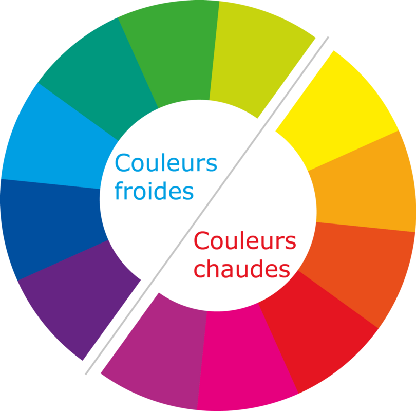
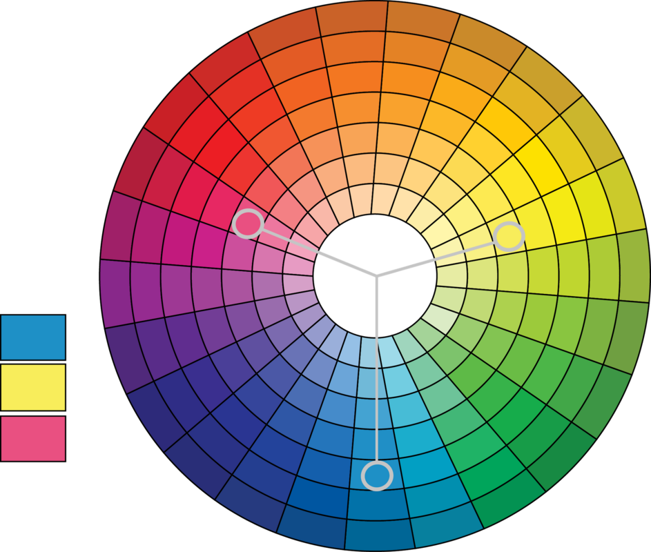
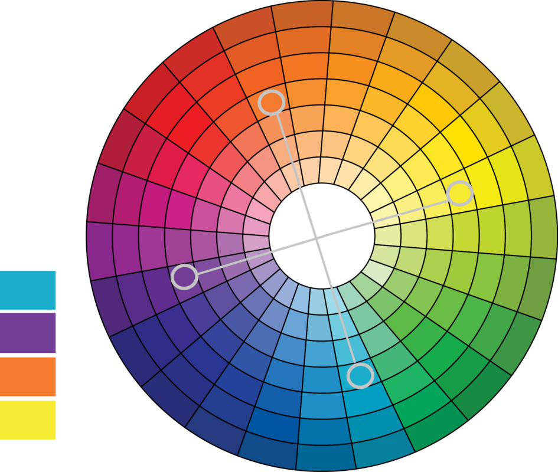
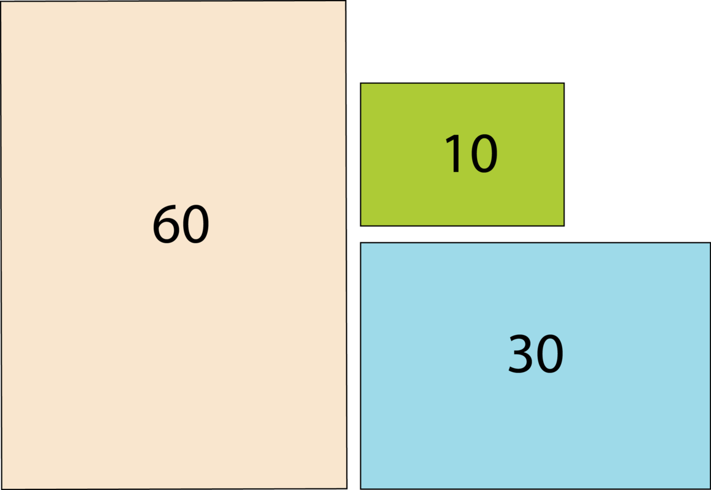
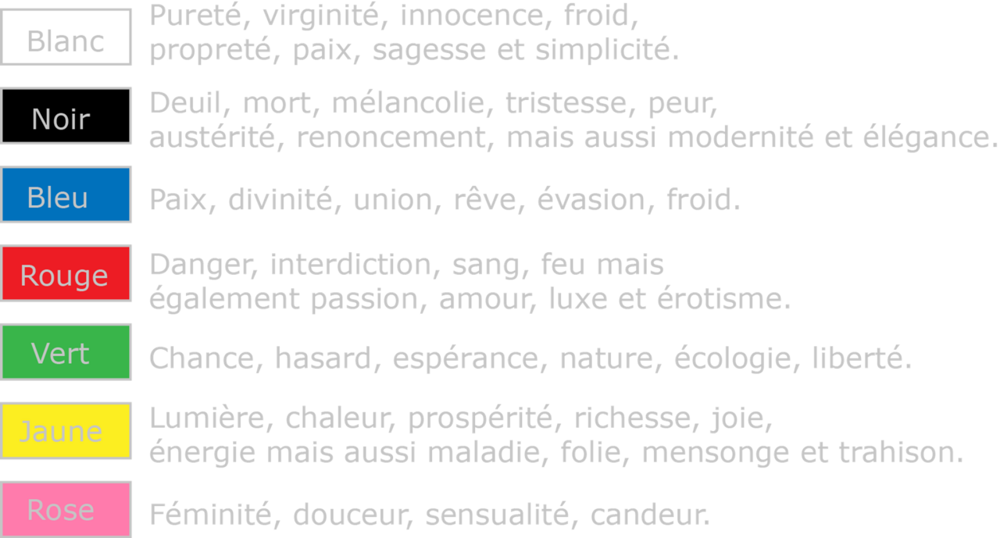
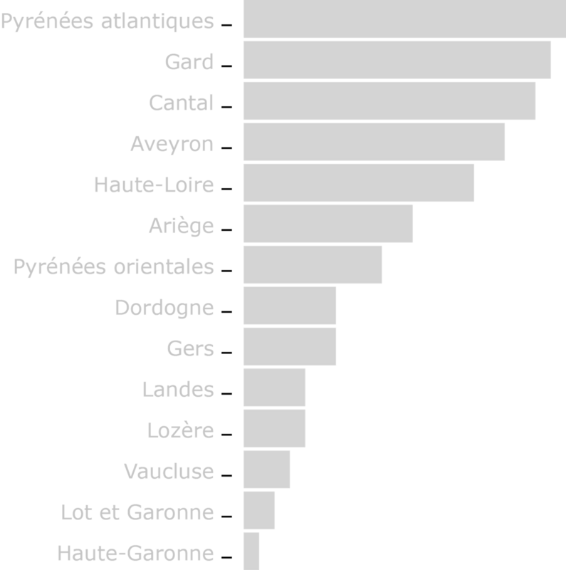

Historique
L'harmonie des couleurs est une pratique très ancienne qui remonte à l'Antiquité, où les artistes et les philosophes grecs ont commencé à explorer la théorie des couleurs et leur signification symbolique. Mais c'est avec la Renaissance qu’elle a été formalisée comme discipline artistique à part entière. Les artistes cherchaient à comprendre les lois qui régissent les couleurs afin de créer des œuvres plus belles et harmonieuses.
La théorie de l'harmonie des couleurs a continué de se développer. Aujourd'hui, elle est une discipline importante dans le design graphique, la publicité ou la mode. Les designers et les artistes l’utilisent pour créer des schémas de couleurs harmonieux et susciter des réactions émotionnelles.
En datavisualisation, William Cleveland, un statisticien américain, a travaillé dans les années 1960 sur l'utilisation de couleurs pour améliorer la compréhension de graphiques statistiques. Ses idées et principes sont largement discutés dans son ouvrage intitulé "Visualizing Data" (1993).
Température de couleur
Les couleurs peuvent se ranger en famille :
- Les couleurs chaudes qui évoquent l'énergie et la chaleur.
- Les couleurs froides qui rappellent l'apaisement et la fraicheur.
- Le blanc et le noir sont classés dans les couleurs froides.
Cercle chromatique
Harmonie des couleurs
L’harmonie des couleurs est la combinaison de couleurs qui fonctionne le mieux pour la plupart des personnes, indépendamment de leurs goûts personnels. L’harmonie des couleurs est à considérer pour chaque diagramme, mais surtout pour composer un ensemble de diagrammes comme les tableaux de bord.
Harmonie directe
L’harmonie directe, également appelée harmonie complémentaire, est la plus simple : la couleur complémentaire est à l’opposé de la couleur principale sur le cercle chromatique.
.png)
Harmonie par scission de la complémentaire
Ce sont deux couleurs qui se trouvent de chaque côté de la couleur complémentaire. Cela permet de créer un trio de couleurs qui restent proches de l’harmonie directe. Le choix d’un jeu de couleurs de ce type est un choix sûr pour pratiquement toutes les compositions.
.png)
Harmonie complémentaire triadique
Cette harmonie découle de la précédente, si ce n’est que l'on écarte un peu plus la distance de la couleur opposée à la couleur clé dans l’harmonie directe. Ce trio est à utiliser avec modération, car les couleurs s’écartent de la complémentaire directe : votre conception semblera comporter trop de couleurs.

Harmonie analogique
Cette harmonie est idéale pour une conception tournant autour d’une seule teinte : les couleurs utilisées ne s’éloignent pas trop de la couleur clé. Ces couleurs sont celles que l’on trouve directement à droite et à gauche de la couleur clé. Cela permet de réaliser une conception visuelle sans prendre trop de risques. Bien que cette harmonie puisse être agréable à l’œil, elle peut aussi manquer de lisibilité, laisser une impression de monotonie ou manquer de dynamisme.
.png)
Harmonie tétraédrique
Semblable à l’harmonie triadique, à la différence qu’il y a quatre points d’ancrage sur le cercle et non plus trois, tous à égale distance. Bien que ce soit une harmonie de couleurs (au même titre que les autres), elle est plus délicate à utiliser correctement puisqu’elle couvre l’ensemble du cercle chromatique. Plus subtilement, les conceptions réussies sur ce modèle utilisent en réalité deux ensembles de couleurs complémentaires.
Cette harmonie a du sens quand vous avez de nombreux éléments qui doivent se démarquer les uns des autres, comme ce peut être le cas sur une affiche. Grâce à des couleurs à égale distance sur le cercle chromatique, chaque élément du visuel bénéficie d’une attention égale aux autres.

La règle des 60-30-10
60 % de l’espace pour la couleur principale, 30 % pour la couleur secondaire et 10 % la couleur d’accent. Cette règle, appliquée à une composition graphique, la couleur principale doit être claire et neutre, la secondaire, de préférence, une couleur complémentaire et enfin la troisième une couleur vive qui se démarque.

Comme les accords en musique, une palette, un ensemble de couleurs, permet de rendre une datavisualisation attirante. Pour vous aider à composer une gamme de couleurs, il existe des outils gratuits sur le web :
Connotation des couleurs
La connotation des couleurs varie d’une culture à l’autre. Si ces codes ne sont pas considérés, votre visualisation peut être mal comprise.
Quelques exemples d’interprétation des couleurs :
- Le rouge, symbole de pureté en Inde et symbole de beauté en Russie…
- Le vert est la couleur du mensonge en Chine et représente la jalousie aux USA…
- Le jaune est associé au commerce en Inde, à la royauté en Chine…
- En France :

Daltonisme (Colorblindness)
Un daltonien voit les choses aussi clairement que les autres, mais il est incapable de voir certaines couleurs. L’incapacité de différentier le vert du rouge (deutéranopie) est la plus fréquente.
En France, la proportion de daltoniens est d'environ :
- 8 % chez les hommes
- 0,4 % chez les femmes

- Évitez donc de choisir du vert et du rouge pour différencier deux courbes !
- Utilisez des outils en ligne pour voir comment un diagramme sera vu par une personne daltonienne. - color blindness simulator - color blind simulator
Modes colorimétriques
Une dataviz est généralement produite sur un écran d’ordinateur, mais il faudra veiller à ce que le résultat imprimé corresponde à ce que vous attendez, l’impression offset ne pouvant pas reproduire toutes les couleurs d’un écran.
La synthèse additive (RGB)
Les écrans et les projecteurs utilisent souvent le procédé de la synthèse additive. Ils ne dépendent pas d'un éclairage extérieur. Le procédé consistant à combiner les lumières de plusieurs sources colorées.

RGB (Rouge, Vert, Bleu)
Le mode couleur RGB est utilisé pour être visualisé à l’écran.
Chaque couleur R, G et B peut prendre une valeur de 0 à 255.
RGB hexadécimal
Le RGB hexadécimal est un encodage de la couleur utilisant deux lettres hexadécimales (lettres allant de 0 à F) par canal (R,G et B). L’encodage est précédé d’un #. Ainsi le blanc s’encode comme suit : #FFFFFF et le noir de telle façon : #000000. Ce codage est souvent utilisé sur le web et dans les logiciels d’infographie.
Le RGBA (Rouge, Vert, Bleu, Alpha)
Il définit une couleur et son opacité (transparence) à partir des trois couleurs de base (rouge, vert et bleu) et du paramètre alpha qui est une valeur numérique comprise entre 0 et 1, ou un pourcentage compris entre 0 et 100%.
La synthèse soustractive (CMYK)
La synthèse soustractive des couleurs est le procédé consistant à combiner l'absorption d'au moins trois colorants pour obtenir les nuances d'une gamme. Le mode couleurs CMYK est généralement utilisé par les imprimantes. C'est un sous-ensemble de RGB, Il y a des couleurs en RGB qui ne peuvent pas être reproduites correctement en CMYK.

Le CYMK (Cyan, Yellow, Magenta, Key) = CMJN (Cyan, Magenta, Jaune et Noir)
Chacune des quatre couleurs est exprimée en pourcentage.
Recommandations
Recommandation 1
Évitez les couleurs trop vives qui saturent l’œil, préférez des couleurs douces
Recommandation 2
Recherchez une harmonie dans le choix des couleurs notamment si les diagrammes doivent s’intégrer dans une infographie. Limitez le nombre de couleurs utilisées et essayez de maintenir une homogénéité dans les couleurs choisies. Aidez-vous des outils pour construire les palettes de couleurs.
Recommandation 3
Tenez compte de la symbolique des couleurs.
Par exemple :
- Pas de vert pour mettre en avant une information négative ou inversement de rouge pour une information positive
- Pas de bleu pour représenter une température chaude ou inversement de rouge pour une température froide.
Recommandation 4
Il est tentant de rajouter de la couleur à vos visualisations, mais la couleur n’améliore pas toujours la lisibilité d’un diagramme.
Utilisez seulement des couleurs quand c’est nécessaire, pour mettre en avant des informations.
.png)
.png)
Le diagramme est plus lisible sans couleur.
.png)
Recommandation 5
Les couleurs chaudes attirent plus l’œil que les couleurs froides. Cette caractéristique est majeure et doit être considérée dans le choix de vos couleurs en fonction des informations communiquées.
Recommandation 6
Choisissez un fond d’écran d’une couleur neutre : blanc, noir ou gris, il ne doit pas venir distraire l’œil et l’attention du lecteur.